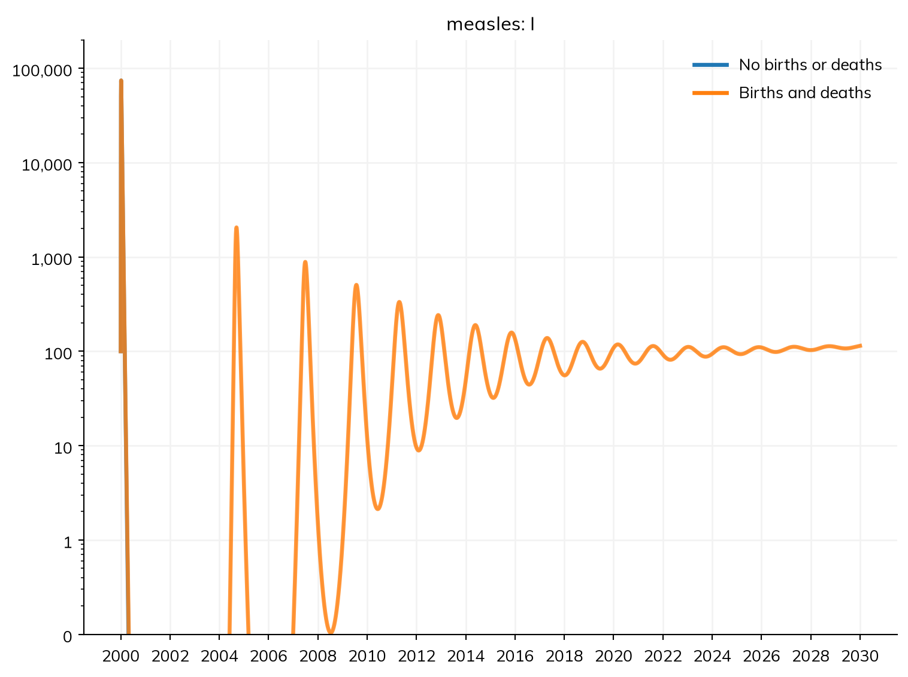
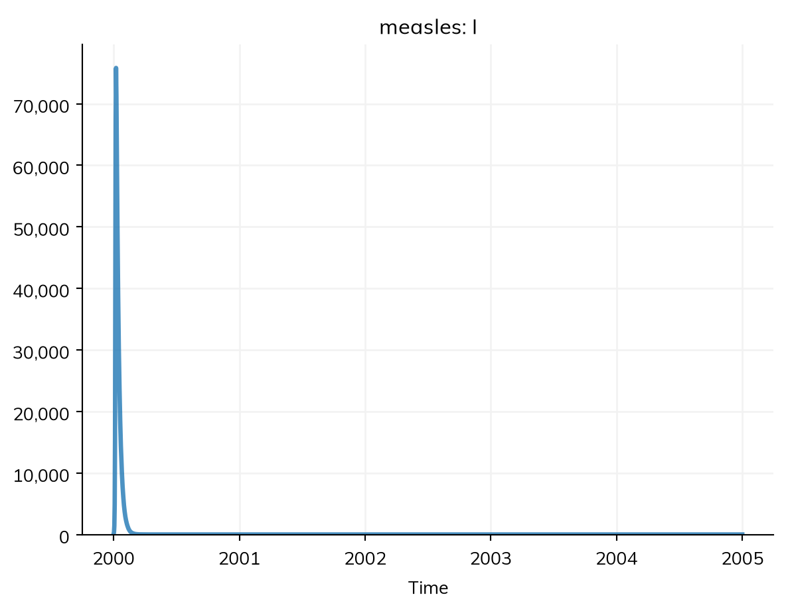
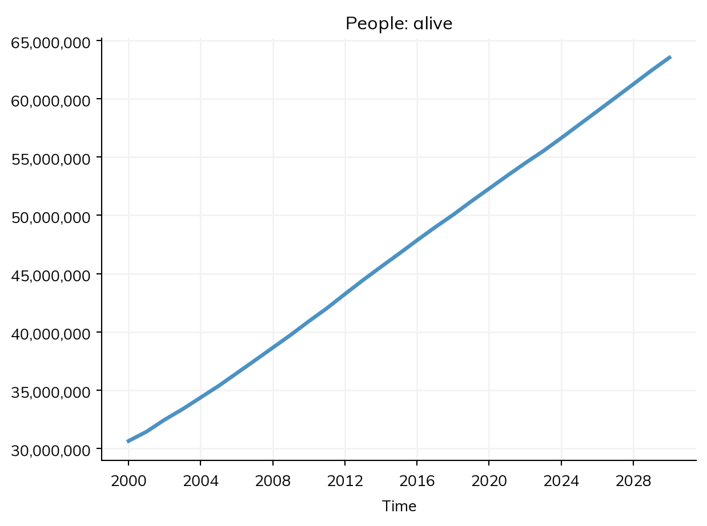
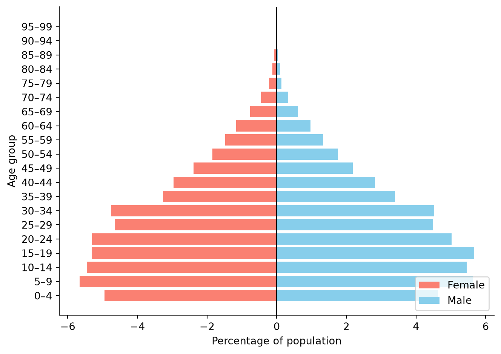
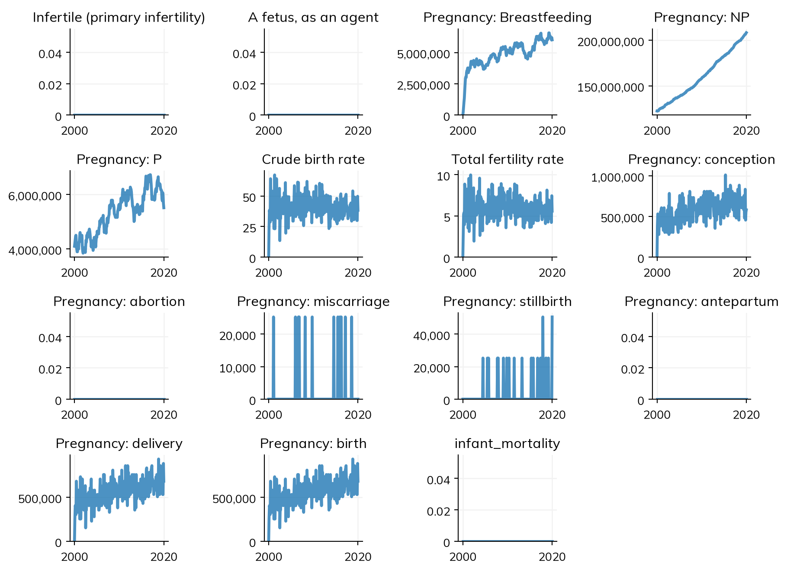

Over a single outbreak of a few months, the population barely changes, and most models leave out births and deaths. Over years it does change, and that matters for transmission: births bring in people who have never been infected, deaths remove people (including those who are immune), and the population ages. For measles, the rate at which births replenish the susceptible population sets how soon it can spread again after an epidemic.
This page covers births and deaths declared for a population, which work however the model is run; rates from data by country, by age, sex, and year; life tables; migration; pregnancy; and aging. The tutorial A3 – Demographics uses them on a whole country, People and agents covers the population at the start, and Branching and rescaling covers modeling a large population with fewer agents.
Births and deaths
Births and deaths for the whole population go in demographics=. ss.birth(rate=r) adds people at a crude birth rate r (a typed rate is per person, e.g. ss.peryear(0.03); a bare number is per year, and above 1 per 1,000 people, as ss.Births reads it, so 30 is the same), into the first state of each disease (here S); ss.death(rate=r) removes people from every state at rate r, read the same way. Here is the measles model of the tutorials over 30 years, with 30 births and 10 deaths per 1,000 people a year:
import starsim as ssS, I, R = ss.states('S I R')infection = S >> I @1.9*I # β = 1.9 per dayrecovery = I >> R @ ss.days(8) # Infectious for 8 days on averagemeasles = ss.Disease(infection, recovery, init_prev=0.001)demographics = [ ss.birth(rate=ss.peryear(0.03)), # 30 births per 1,000 people per year ss.death(rate=ss.peryear(0.01)), # 10 deaths per 1,000 people per year]pars =dict(total_pop=100_000, start='2000', stop='2030', dt=ss.days(1), verbose=0)sim = ss.Sim(measles, demographics=demographics, **pars)msim = ss.parallel({'No births or deaths': ss.Sim(measles, **pars), 'Births and deaths': sim})fig = msim.plot('measles.I', log=True, do_show=False) # A log scale shows the later epidemics, which are far smaller than the firstfig.axes[0].set_ylim(0.1, 200_000)fig

log=True plots on a log scale; do_show=False returns the figure without showing it, so it can be changed (here, the range of the axis) before it is shown.
Without births, the first epidemic leaves almost everyone immune, and measles is gone for good. With them, births add susceptible children until there are enough for measles to spread again, and the epidemics recur, smaller each time, until they settle at an endemic level.
The births and deaths are transitions of the disease, so they are among its results (sim.results.measles.births, sim.results.measles.deaths) and in describe(). With several diseases, the same people are born into and die from each of them.
In the ODE, though, a fraction of an infectious person is enough for measles to come back, and the sim says so when it runs:
Sim: measles, 100,000 people, as an ODE, 2000-01-01 to 2030-01-01
measles: R0 = 15.2, with 100 infectious at the start
Note: the number infected in "measles" falls to 0.91 (at 2000-04-10) and then rises to 2,053; a stochastic run would usually die out there. solver="gillespie" with ss.parallel(n_runs=...) shows how often, in the runs of msim.results.measles.I after that point
Done in 0.017 s; measles: 208,602 infections; at most 74,135 infectious, on 2000-01-07
The number infectious falls below one person within a few months. In a real town of 100,000 people, measles would have died out by then. A stochastic model, in which people are whole numbers and chance matters, shows this:
Sim: measles, 100,000 people, as a stochastic compartmental model (chain binomial), 2000-01-01 to 2005-01-01
measles: R0 = 15.2, with 100 infectious at the start
Done in 0.0068 s; measles: 100,151 infections; at most 75,827 infectious, on 2000-01-08

Measles dies out after the first epidemic, and only comes back if it is brought in from outside. This is why measles persists without reintroduction only in large populations (above a “critical community size” of a few hundred thousand people). See Solvers and backends for more on when an ODE and a stochastic model differ.
A death from a disease, rather than from every state, is a transition of the disease: ss.death(I, rate=ss.peryear(0.1)) (see Diseases). demographics=True adds births and deaths at default rates (20 births and 10 deaths per 1,000 people a year).
A birth or death rate can also change over time, with ss.timeseries(). By default each value holds until the next; 'linear' interpolates between them. Here the birth rate falls from 40 to 20 per 1,000 a year over 30 years, compared with a birth rate that stays at 40:
The population grows more slowly with the falling birth rate, and with fewer susceptible children born each year, the endemic level of measles is lower. The times of a series can also be years ({2000: ..., 2030: ...}): a bare number from 1900 on is a calendar year, and a smaller one a time in the sim’s unit after the start. See Parameters for ss.timeseries() and other parameters that vary over time.
Rates from data
Birth and death rates usually come as data: crude birth rates by year, and death rates by year, sex, and age. The demographics modules ss.Births and ss.Deaths take these, and the rates of the UN World Population Prospects for a country by name, which come with Starsim. With ss.people() for the population at the start (see People), this is the population of Kenya from 2000:
kenya =dict( people = ss.people('Kenya', year=2000, n_agents=20_000), demographics = [ss.Births(birth_rate='Kenya'), ss.Deaths(death_rate='Kenya')], start =2000, stop =2030, dt = ss.years(1),)sim = ss.Sim(**kenya)sim.run()sim.results.alive.plot()sim.people.plot_ages();
Sim: births, deaths, as 20,000 agents, each 1,530 people, years 2000 to 2030
Note: unit='year' (from dt)
Done in 0.13 s


The demographics modules run as agents. They age people, give each newborn a mother of reproductive age (people.parent), and can run on a step of their own (e.g. dt=ss.years(1) for the demographics of a model whose diseases step daily).
The model’s population can be checked against the UN’s own estimates of the population of Kenya:
for year in [2010, 2020, 2030]:print(year, 'model:', round(sim.results.alive[year -2000]), 'UN:', round(ss.people('Kenya', year=year).named.total))
The model follows the UN’s estimates to within 2%. The UN’s rates that come with Starsim are estimates for single years, given every ten years, so ss.Births and ss.Deaths interpolate between them.
Data of your own
Rates of your own are given as a table. Crude birth rates have a column for the year and one for the rate (ss.Births(birth_rate=df)); death rates have columns for the year, sex, age group, and rate (ss.Deaths(death_rate=df)). Each rate holds from its year until the next year given.
Crude birth and death rates are usually given per 1,000 people, and death rates by age per person. A rate above 1 is read as per 1,000, and a rate below 1 as per person; a rate that could be either (from 0.1 to 1, or above 1,000) gives a warning saying which was assumed. rate_units=1000 (per 1,000) or rate_units=1 (per person) says which, and silences it:
births = ss.Births(birth_rate=35) # 35 per 1,000 people per yearbirths = ss.Births(birth_rate=0.035) # The same, per persondeaths = ss.Deaths(death_rate=df, rate_units=1) # Death rates by age, per person
A life table says how many of a cohort die at each age. ss.death(lifetable=...) takes one and runs under every solver: as agents, each person’s age at death is drawn from it, given their age; in a compartmental model stratified by age, it gives a death rate for each age group. ss.Deaths(lifetable=...) also takes a table for each sex, and for each year from which it holds:
import numpy as npages = np.arange(0, 105, 5) # The lower edge of each 5-year age groupdx = [5, 1, 0.5, 0.5, 1, 1, 1, 1.5, 2, 3, 4, 5, 7, 9, 11, 13, 14, 12, 8, 4, 1.5] # Deaths in each group, of a cohort of 100 (an illustrative table)table = ss.lifetable(ages=ages, deaths=dx)pars =dict(n_agents=5000, start=2000, stop=2060, dt=ss.years(1), verbose=0)msim = ss.parallel({'Constant death rate': ss.Sim(demographics=[ss.Births(birth_rate=20), ss.death(rate=ss.peryear(0.02))], **pars),'Life table': ss.Sim(demographics=[ss.Births(birth_rate=20), ss.death(lifetable=table)], **pars),})for sim in msim.sims: age = sim.people.ageprint(sim.label, '– mean age:', age.mean(), 'share over 90:', (age >90).mean())
Constant death rate – mean age: 46.556656 share over 90: 0.16842327150084316
Life table – mean age: 34.08276 share over 90: 0.00711615004221445
With a constant death rate, everyone has the same chance of dying each year whatever their age, so many people live implausibly long: after 60 years, a sixth of the population is over 90. With the life table, deaths come mostly in old age, under 1% are over 90, and the population is younger.
Migration
People arriving from outside are ss.immigration(rate=r), where r is a number of people per unit time (not per person); as agents, they arrive with ages drawn from the population’s. People leaving are ss.emigration(rate=r), a rate per person; as agents, they are recorded as having left (results.emigrated), not as having died. Both go in demographics=:
A run of these over ten years, for a population of 100,000 modeled with 5,000 agents:
pars =dict(n_agents=5000, total_pop=100_000, start=2000, stop=2010, dt=ss.months(1), verbose=0)sim = ss.Sim(demographics=demographics, **pars)sim.run()print('Population after 10 years:', sim.results.alive[-1])print('Emigrants:', sim.results.emigrated.sum())
Population after 10 years: 99700.0
Emigrants: 5420.0
About 500 people leave each year (0.5% of 100,000) and 500 arrive, so the population stays near 100,000. For movement between places within a model, see Geography.
Pregnancy
ss.Pregnancy models pregnancy itself, for models where it matters: mother-to-child transmission, maternal health, or contraception. Women conceive at age-specific fertility rates; a pregnancy ends in a delivery, a miscarriage, a stillbirth, an abortion, or a maternal death; and each delivery adds a child, whose mother is known. It runs as agents. Fertility rates by age come from the UN for a place by name, as for births and deaths (fertility_rate='Nigeria', per 1,000 women in each 5-year age group, by year), or as a table of your own, here also per 1,000 women:
import pandas as pdfertility = pd.read_csv('test_data/nigeria_asfr.csv') # Age-specific fertility rates by year and single year of agepregnancy = ss.Pregnancy(fertility_rate=fertility, rate_units=1000) # Per 1,000 women per year; or fertility_rate='Nigeria'nigeria =dict( people = ss.people('Nigeria', year=2000, n_agents=5000), demographics = [pregnancy, ss.Deaths(death_rate='Nigeria')], start =2000, stop =2020, dt = ss.months(1), verbose =0,)sim = ss.Sim(**nigeria)sim.run()sim.results.pregnancy.plot()

Pregnancy is declared, with states NP (not pregnant) and P (pregnant), so its transitions are events that other modules can use, as for a disease: conception, delivery (which happens to the mother), and birth (which happens to the newborn). Each is also a result (sim.results.pregnancy.conception, .birth, .miscarriage, .stillbirth, .abortion). Contraception, for example, is a modifier of conception, and an intervention can reach pregnant women (where=pregnancy.P) or newborns (who=pregnancy.birth; see Interventions):
pregnancy = ss.Pregnancy(fertility_rate=ss.peryear(0.08), rate_units=1) # 80 conceptions per 1,000 women a yearcontraception = ss.modify(pregnancy.conception, multiply=0.5, start='2005') # Halves conception from 2005pars =dict(demographics=pregnancy, n_agents=5000, start='2000', stop='2010', dt=ss.months(1), verbose=0)scenarios = {'No contraception': ss.Sim(**pars),'Contraception': ss.Sim(**pars, interventions=contraception),}for label, sim in scenarios.items(): sim.run()print(label, 'births:', sim.results.pregnancy.birth.sum())
No contraception births: 1045.0
Contraception births: 818.0
Mother-to-child transmission uses the networks that pregnancy makes between mother and child (ss.PrenatalNet and ss.BreastfeedingNet); see Contact networks. pregnancy.pars lists the other parameters, such as the duration of pregnancy, the chance of a loss, and maternal and infant mortality.
Aging
People age if the model has births or deaths, and not otherwise; use_aging=True or use_aging=False in the sim says otherwise. As agents, each person’s age goes up with each step. In a compartmental model stratified by age, people move from each age group to the next: if people are spread evenly over the ages in a group, at a rate of one over its width (a group 5 years wide is left at a rate of 1/5 per year), and for a named population, at the rate its age pyramid gives, as agents would age.